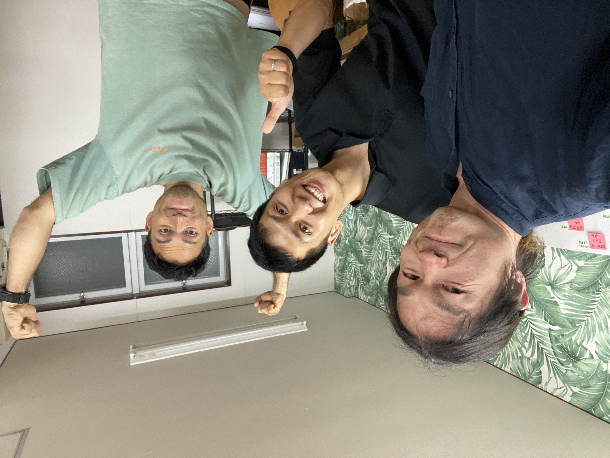

新城と天川をつなぐ対話
次の企画が、
ここから生まれた。
今井真央くんと話した、新城未来会議、地域企業、若者、協力隊の自立、そして新城と天川のこれから。

この文章は、新城未来会議、視察中の対話、最終対話、企画書メモをもとに、読みやすさのために整理した記録です。協力隊制度、法人化、行政との役割分担などに関わる細部は、公開前に本人確認を前提としています。
最後は、マオくんだった。
新城未来会議を主催し、地域の事業者さんや関係者さんをつなぎ、若者と仕事、地域企業とキャリア、協力隊の任期後まで見据えて動いている人。
フォレストガーデンで出会った人たちの声を聞いた後、僕にとってマオくんとの対話は、「じゃあここから新城と天川をどうつないでいくのか」という、次の扉だった。
熱い人だった。
でも、勢いだけの人ではない。ちゃんと悩み、制度の線引きを考え、行政との関係を考え、地域に価値を残す形を探している人だった。
新城未来会議を開く人
6月18日の夜、新城未来会議に参加した。
そこには、地域おこし協力隊、地域の事業者さん、教育、農業、キャリア、スポーツ、地域で挑戦する人たちが集まっていた。
この場で見えてきたのは、「地域に仕事がない」という単純な話ではなかった。
仕事はある。企業もある。人もいる。
でも、それが若者に届いていない。若者が「ここで働きたい」「ここで生きたい」と感じる接点として、まだ見える形になりきっていない。
地域に仕事がないのではなく、ここで働く意味が、若者に届く形に編集されていない。
マオくんは、その間に立とうとしていた。
地域企業と若者。行政と民間。協力隊と任期後の自立。新城の中にあるものを、どう見える形にし、どう次の動きにつなげるか。
新城未来会議は、そのための入口だった。

新城未来会議での一コマ。真ん中が、マオくんと一緒に法人を立ち上げた地域おこし協力隊のパートナー、山本さん。
協力隊のリアルを話せる人
最後の対話では、地域おこし協力隊としてのリアルな悩みも話題になった。
任期後に自立する必要がある。だから、任期中から準備しなければならない。
一方で、法人化や有償事業、行政との役割分担、公的活動と民間活動の線引きは、とても繊細になる。
これは、マオくん一人の悩みではない。全国の地域おこし協力隊にも通じる構造的なテーマだと感じた。
「行政に今までちゃんと全部報告して、かなり協力的だったんで、地域おこし協力隊の業務に関しては二人三脚でやってきたんです」
「でも、法人になって、公式の協力隊という人格と、法人の人格が出てきた時に、こっちの法人格の方は全部が全部報告しなくていいなって思って」
マオくんが話していたのは、行政と距離を置きたいという話ではなかった。
むしろ逆だった。
これまでいい関係でやってきたからこそ、これから先もいい関係でいるために、線引きを丁寧に考えたいという話だった。
「喧嘩したわけじゃないです。今後いい関係性でいたいからこその線引きが、今後すごく大事になってくるかなって」
だから必要なのは、行政と対立することではなく、協力隊活動と民間事業の間に、きちんと合意形成された「第三の道」をつくることだと感じた。
マオくんは、制度の中にいながら、制度の外へ逃げるのではなく、制度と対話しながら次の形を探している。
その姿勢が、とても大事だと思った。
「目指してるポイントは、多分もう行政も僕らも全く同じゴールを目指してると思うんですけど、この登り方みたいなところで勝ち合っちゃうのが、すごくもったいないなって思うんです」
この言葉に、マオくんの今いる場所がよく出ていた。
行政を敵にするのではない。自分たちの動きだけを正解にするのでもない。
同じゴールに向かっているからこそ、登り方を対話していく。
「勝ち合わないようにするんじゃなくて、勝ち合った上でいかに対話して、AでもないBでもないCを取っていくみたいな。そこが僕にとっての勉強なんだろうなって」
この「第三の道」を探す感覚は、マオくんの活動そのものだった。
行政に合わせきるのでもない。民間として突っ走るだけでもない。地域にとって本当に意味のある形を、対話しながらつくっていく。
その難しさを、マオくんはごまかさずに話してくれた。
新城と天川がつながる企画の種
対話の後半で、具体的な企画の種が生まれた。
新城市の地域企業の若手社員や新人社員が、天川村へ来る。
天川村で、山、水、坐禅、修験道的な身体性、対話、自己理解の時間を体験する。
そして、「自分は何を大切にして働くのか」「この地域で働く意味は何か」を、自分の身体と言葉で見つめ直す。
「思いつきで喋りますね」
そう言いながら出てきたアイデアが、むしろ一番生きていた。
「昨日の坐禅みたいな話とかって、これから社会に出る新人研修みたいなところと、すごく親和性高いなと思って」
「新城の若い子たちと話してて思うのは、すごい高いモチベーションで、ここの企業に入りたいとかじゃなくて、どちらかというと、ちょっと諦めに近い選択で会社を選んでる人たちが多いなって」
「でも、それって若い子だけじゃなくて、働いてる大人たちの意識がそうだから。そのお父さん、お母さんを見て、子どもが大人になって働くって、希望があって夢に向かってというより、今の自分の諦めで入っているっていう子たちに対して」
ここに、マオくんの問題意識があった。
若者だけを変えようとしているのではない。若者を取り巻く地域企業、大人の働き方、地域で働くことへのまなざしまで含めて、変えていこうとしていた。
新城×天川 若手社員・新人研修。山と祈りを通じて、自分の中心に戻る人材育成プログラム。
これは、単なる社員研修ではない。
観光交流でもない。
新城の若者、地域企業、地域で働く意味と、天川の山、水、祈り、身体性、中庸思考がつながる企画の種だった。
「1社じゃなくて、複数社、5社の新人が集まって、その子たちとちょっと行くツアーみたいなのをやったら、全然それは地域の人事として行く意味があるんで」
「ただの会議室でやるかったるい研修じゃなくて、アウトドアっていう意味で、体感するワークみたいなところで、まずそこで小さくやってみて」
会議室で正解を教える研修ではなく、身体で感じる研修。
その言葉が出てきた時、新城と天川がつながる輪郭がかなりはっきりした。
頑張らせる研修ではなく、中心に戻る研修
若者に「もっと頑張れ」と言うだけでは届かない。
前向きであることだけを求めても、心の奥には届かない。
迷うこと、違和感を持つこと、立ち止まることも、人が自分の本音に触れる大切な入口になる。
だから、この研修の中心は「頑張らせること」ではなく、「自分の中心に戻ること」になる。
- 山を歩く。
- 水に触れる。
- 坐禅をする。
- 沈黙する。
- 自分の感覚を言葉にする。
- 仲間の言葉を聞く。
- 自分の仕事と人生を結び直す。
天川で自分の中心に戻り、新城へ帰って、自分の仕事と地域を見つめ直す。
この往復に、新城と天川がつながる意味がある。
まずは、マオくんたちに天川へ来てもらう
いきなり企業研修として大きく出す必要はない。
まずは、マオくんと山本さんたちに天川村へ来てもらう。
坐禅、山、水、祈り、対話、食事、村の空気を、実際に体験してもらう。
その上で、「これなら新城の若手社員に届けられる」「ここは企業研修として翻訳できる」という感覚を一緒に確認する。
「自分たちが新人になったと思ってやらないと、なんとも言えないもんね。体験したら、企業に自信持っていいよって言えると思うんですよね」
小さく始める。
でも、ただの小さな一回ではない。
新城と天川が、地域を越えて若者の育ちと働き方を考えていく最初の一歩になる。
「新城天川未来会議を、最低1ヶ月に1回のペースを守りながらやらせてもらっていいですか」
最後に、マオくんは言ってくれた。
「天川、1回行きます」
僕は思わず、「マジで来てください」と返した。
真白と天川をつなぐ人
今回の視察で、僕はフォレストガーデンに集う人たちの声を聞いた。
土地を守る人、移住してきた人、自然農をする人、食卓をつくる人、場をデザインする人。
その声を聞いた後、マオくんとの対話で、未来への具体的な企画が生まれた。
僕にとってマオくんは、新城の中で未来会議を開く人であり、地域企業と若者をつなぐ人であり、そして一緒に天川と新城をつないでいく人だ。
真白、フォレストガーデン、新城未来会議、天川村。
それぞれ別々に見えていたものが、マオくんとの対話で一本の線になり始めた。
マオくんとの対話は、ただの振り返りではなかった。
新城と天川が、若者、仕事、地域企業、山、祈り、身体性を通じてつながっていくための、具体的な始まりだった。
まずは、天川で会おう。
そこから、新城と天川の次の未来会議を始めたい。